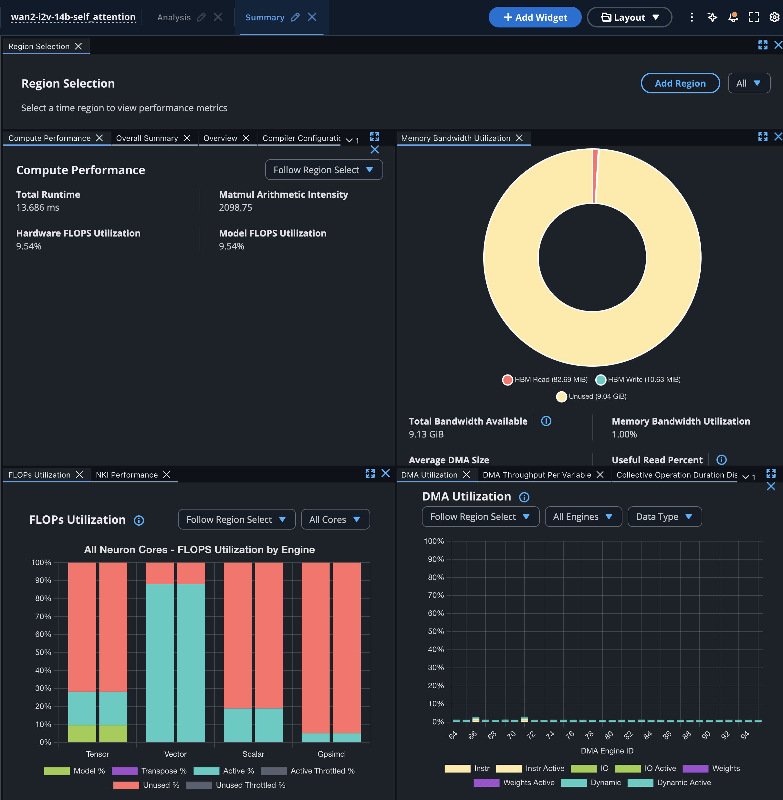
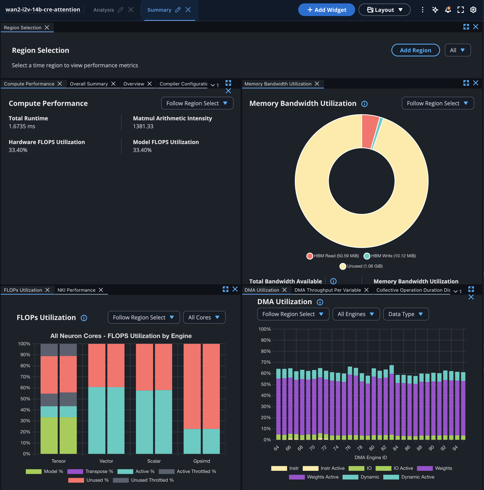
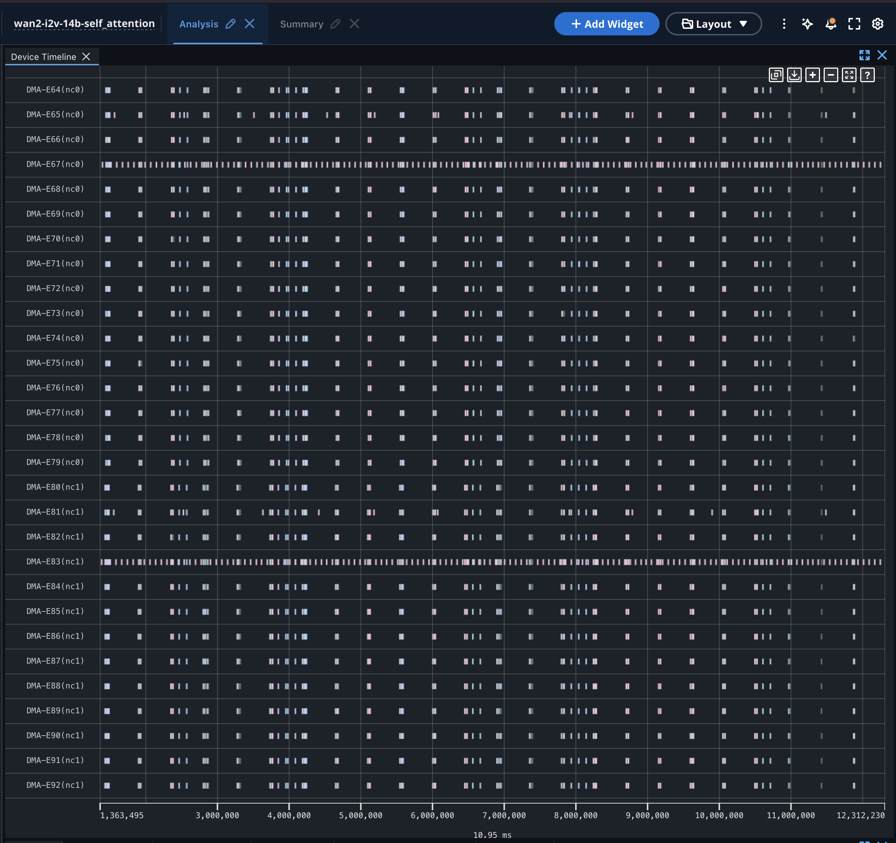
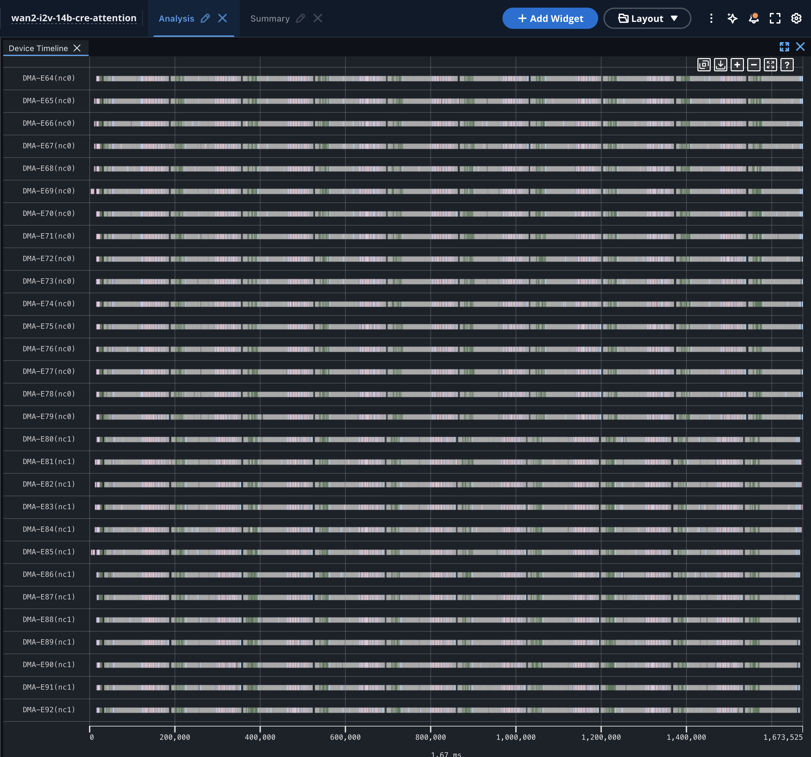
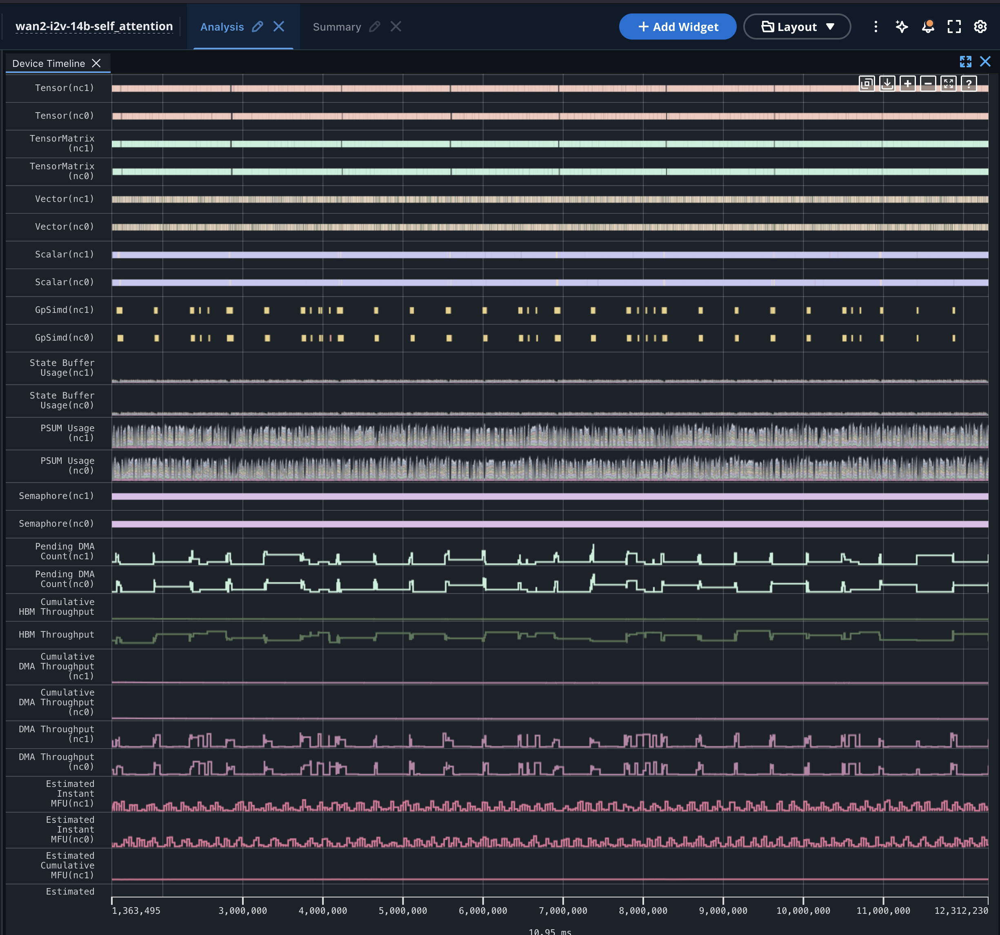
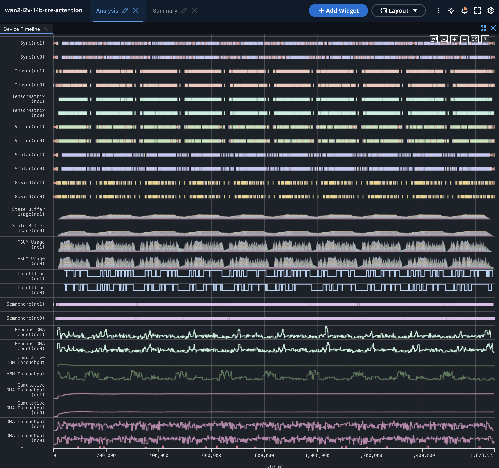

Wan2.2 I2V 14B self-attention: wan_flash_self_attn vs attention_cte
368×480, 21 frames, 10 steps, batched CFG, TP=4 SP=2, trn2 (LNC2). Branch exp/staging-attn. Profiles: Neuron Explorer, one captured execution of each kernel.
1. What this attention is
Self-attention is the step inside each of the DiT's 40 transformer blocks where every video token (4,140 of them: 6 latent frames × 23 × 30 patches) looks at every other token and decides what to take from it. It runs 40 blocks × 10 denoising steps for both CFG halves, so it is the most expensive operation in denoising, and a faster attention kernel directly shortens the time to generate the video.
2. The two kernels
Both compute the same attention for the same tokens: each SP rank attends its 2,072 query tokens to all 4,144 key/value tokens, 10 heads of 128 dims, for each CFG half. They differ only in how that work is mapped onto the NeuronCore engines.
- Legacy,
wan_flash_self_attn(kernels/self_attention.py): hand-written NKI flash attention. One call per CFG half, heads one after another, K/V padded 4,144 → 6,144 tokens, online softmax, P transposed with an identity matmul on the Tensor engine, every elementwise step on the Vector engine. - cte,
attention_cte(nkilib in the image; what staging vllm-omni-neuron runs at CP=1): one call for both CFG halves (20 head instances), no padding, exp on the Scalar engine with max-subtraction and row-sum fused, P transposed by DMA, QK of one query group overlapped with PV of an earlier group.
The math is the same; cte keeps more engines busy at once and wastes less work, so each head takes ~0.17 ms instead of ~1.37 ms.
Schematic: one legacy head vs the same time in cte
Illustration, not measured data: it redraws the pattern seen in the Analysis view. Same time axis for both; filled = engine busy.
3. Results
Per-call numbers: Neuron Explorer Summary view. Denoise and total: median of 3 clean runs (no profiler), same node. Self-attention per video is an estimate: per-call time × calls (40 blocks × 10 steps × 2 calls legacy, × 1 call cte).
Engine busy, per kernel call
Approximate: read off the Summary view's "FLOPS Utilization by Engine" and "DMA Utilization" charts. cte Tensor also shows ~12% active-throttled, not included above.
Table view of the engine chart
| Engine | legacy | cte |
|---|
4. Each change: where it shows, and where it is in the code
Per-head structure: legacy Tensor/Vector rows repeat in equal ~1.35 ms segments (10 heads × 1.37 ms = 13.7 ms), the head loop for batch_id in nl.sequential_range(batch_size) at self_attention.py:65. cte shows ~0.17 ms blocks, ~10 per core across 1.67 ms.
1. DMA engines: more activity
View: DMA-E64…E92 rows, legacy mostly idle with short bursts, cte all 32 queues busy almost the whole time. Pending DMA Count: legacy low and flat, cte continuously non-zero.
Code: legacy loads K, V, mask, Q in bursts at each K section inside two sequential loops (self_attention.py:65, 81, 87-109). cte transposes P with DMA (attention_cte.py:3412, 3434, nisa.dma_transpose) where legacy uses the Tensor engine (self_attention.py:163), and streams loads alongside compute.
2. Tensor engine: more useful work
View: Tensor/TensorMatrix rows, ~1.35 ms per head (legacy) vs ~0.17 ms (cte); Estimated Instant MFU, legacy low.
Code: a third of legacy's Tensor-engine work is the identity-matmul transpose (line 163), and K is padded 4,144 → 6,144; neither is attention math. cte has no identity transpose and no padding, and overlaps QK for query group i+2 with PV for group i (_fused_qkmax_and_pv_impl, attention_cte.py:3487).
3. Scalar engine: more activity
View: Scalar rows, dense in every cte block.
Code: cte computes exp on the Scalar engine with the max-subtraction and row-sum fused into one instruction (nisa.activation(op=nl.exp, bias=running_max, reduce_op=add), attention_cte.py:3380-3392). Legacy does these as separate passes.
4. GpSimd: more activity
View: GpSimd rows, legacy sparse blips aligned with the DMA bursts, cte dense in every block.
Code: one visible cause is cte initialising its max buffers on GpSimd (nisa.memset(..., engine=nisa.gpsimd_engine), attention_cte.py:3509). The rest of its GpSimd work is not traced here.
5. Vector engine: less activity
View: Vector rows, legacy solid across the whole window (~88%), cte interleaved with the other engines (~61%).
Code: legacy runs every per-tile step on the Vector engine (self_attention.py:117-176): PSUM→SBUF copy, scale multiply, mask add, max, two f32→bf16 copies, and an SBUF add for the PV running sum. cte moved the exp and its sum to Scalar and the transpose to DMA.
6. HBM reads and writes: less
View: HBM Throughput row and the Summary donut: read 82.69 → 50.59 MiB, write 10.63 → 10.12 MiB.
Arithmetic: cte reads each input exactly once: 20 head instances × (2,072 Q + 4,144 K + 4,144 V tokens) × 128 × 2 bytes = 50.6 MiB; and writes the output once: 20 × 2,072 × 128 × 2 bytes = 10.12 MiB. Legacy reads more because K/V are padded to 6,144, Q is reloaded for every K section (line 109 is inside the section loop at line 81), and the mask is reloaded per section per head (line 102). Those do not fully add up to 82.69 MiB, and legacy's 10.63 MiB write is about twice its output; the remainder is not explained by the code.
Not compared: cte shows a Throttling row (square wave), matching "Active Throttled" in its Summary. The legacy screenshot has no Throttling row.
5. Neuron Explorer screenshots (evidence)
Summary view: legacy, then cte

wan_flash_self_attn, Summary.
attention_cte, Summary (tab title reads "cre-attention").Analysis view, DMA queues: legacy, then cte


Analysis view, engines: legacy, then cte

